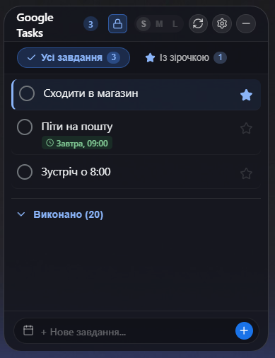

Google Tasks Widget v1.0.0
Windows 10/11 · x64Настільний віджет Google Tasks
Ультралегкий (~25 MB RAM) настільний віджет у стилі Glassmorphism / macOS. 1-клік Google OAuth, підтримка розділу «Із зірочкою», робота офлайн, системний трей та автозапуск.
tauri-app.exe · v1.0.0
завантажити